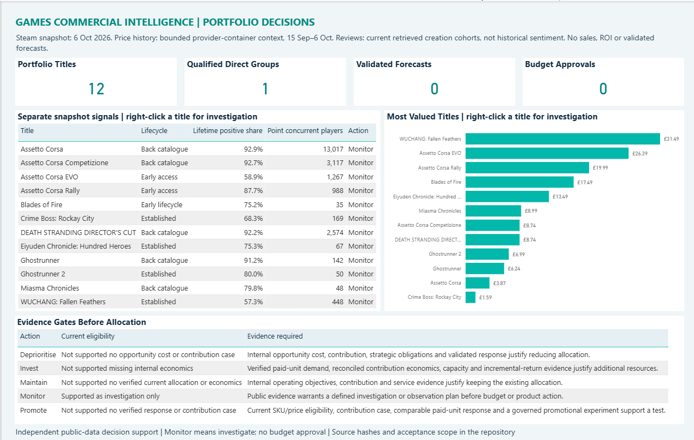

Investigate player concerns before changing promotional spend.
The analysis identifies questions about product experience, purchase expectations and pricing. It gives each game a follow-up investigation and specifies the sales, cost and support information needed before making a budget decision.
Where does the evidence justify closer attention?
A lower price, a positive review or a busy game can each tell part of the story. A commercial decision needs to understand how those observations fit together, whether the comparisons are fair and what remains unknown.
I collected public UK prices, discount records, review information and counts of people playing. After checking missing information and conflicting prices, I compared the available measures separately and used selected review examples to develop questions for product and support teams.
Only Eiyuden had enough closely matched games for a direct group comparison. The other titles were considered individually, with their comparison limits retained.
Three findings shaped the recommendation.
These are different reasons to investigate. They are not a ranking of expected returns.
| Finding | Evidence | Commercial implication |
|---|---|---|
| WUCHANG and Assetto Corsa EVO warrant closer product investigation. | 57.33% and 58.95% of counted lifetime Steam reviews were positive in the dated snapshot. Selected examples raised combat questions in WUCHANG, and feature, progression and performance questions in EVO. | Check the reports against current game versions, support records and player research before deciding the response. |
| Eiyuden's lower price does not settle the commercial question. | Its £13.49 price was below the £14.75 middle price of three closely matched games. Its positive-review share was also lower: about 75%, against about 89% for the middle comparison value. | Investigate expectations and ease of use before assuming another discount would help. The comparison does not show what caused the difference. |
| Older titles deserve continued observation. | Assetto Corsa, Competizione and DEATH STRANDING DIRECTOR'S CUT had 13,017, 3,117 and 2,574 people playing at retrieval, alongside lifetime positive-review shares above 92%. | Follow activity over time and connect it to actual sales and costs before treating it as steady demand or a promotional opportunity. |
Prices, review totals and player counts refer to the accepted collection dates. The twenty reference games provide context; only Eiyuden's three direct comparisons meet the requirements for a group comparison. Detailed comparison findings.
Turn reported experiences into questions that can be checked.
I used 3,572 review records from two fixed review-creation periods and examined selected examples in context, including a fresh 110-record check. This helped connect reported experiences to practical investigations across all twelve games.
For example, WUCHANG calls for encounter and combat checks; EVO raises questions about feature expectations and performance; Eiyuden points to menus, party management and in-game resources. Each needs a different conversation with product and support teams.
The selected examples cannot tell us how common a concern is. Steam's language labels were not independently verified, some review collections were capped, and text or recommendation votes could have changed after the review was written.
Make the sales requirement of a discount explicit.
Reducing a £10 price to £9 would require about 11.1% more copies sold to keep the total amount paid by customers unchanged, before costs. I used examples like this to make the trade-off visible for each game.
These are calculations under stated assumptions. They do not predict sales or establish profit. For the selected Assetto Corsa example in the report, penny rounding changes the required unit increase to 11.2%.
The short pricing window adds recorded-offer context, but matching older offers to the exact product still needs checking. There is no complete annual history or measured evidence that a discount improved sales.
Five pages connect the evidence to the next decision.
The report covers the games as a group, title-level investigation, pricing context, player feedback and pricing scenarios. The executive overview below provides a visual introduction to the report. Select it to open the full-size image; the complete five-page report is available in the repository.
Open the report files and instructions. Refresh loads the dated evidence included in the project. It does not fetch live prices or reviews; Power BI Service publication has not been performed.


A repeatable route from public records to a commercial recommendation.
Python handled collection and checking, SQL provided consistent analytical tables, and Power BI presented the results. Source records and assumptions remain linked to their outputs so another analyst can inspect the basis of a finding.
The completed release passed 212 automated tests and was rebuilt in clean local and GitHub environments. Independent review checked the findings, title-level evidence and final recommendation.
Reproduction guide · Technical methods · Verification record
The next step is targeted investigation.
The outcome is a clear set of questions for each game, a way to examine pricing requirements and a statement of the information needed before money moves. The recommendation remains specific to what the public evidence can support.